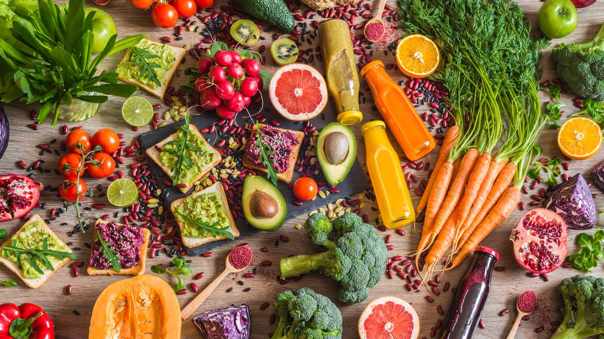
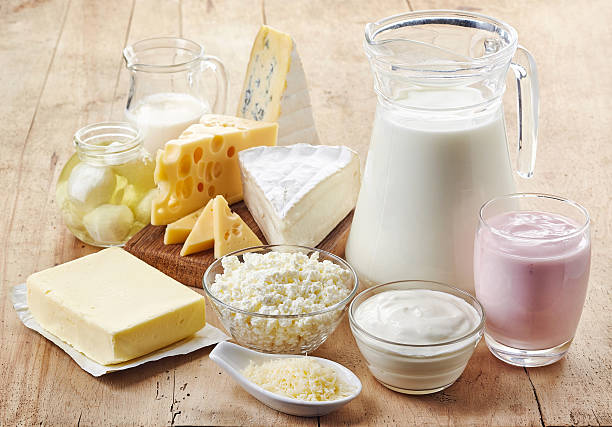
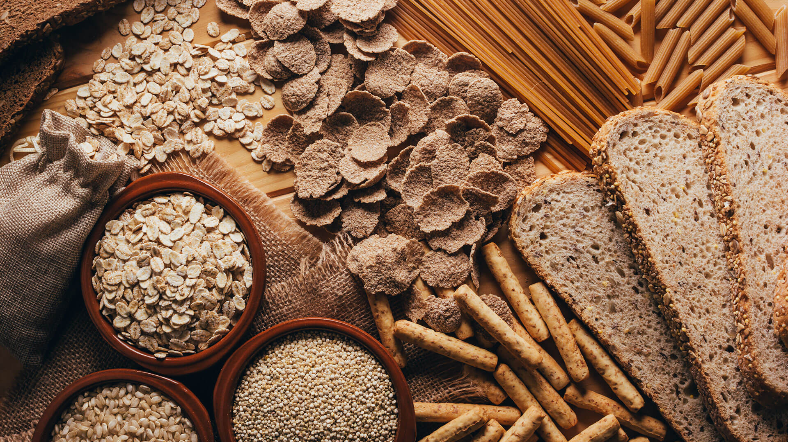

Conheça a missão, visão e os valores que guiam a NutriNove no caminho de democratizar uma alimentação saudável para todos.

A missão central da NutriNove é oferecer e ajudar a transformar a alimentação e a saúde de cada pessoa de maneira confiável, personalizada e precisa, contribuindo para a promoção da saúde e bem-estar dos nossos utilizadores.
Com base no formulário preenchido, criamos uma dieta sob medida — seja para perda de peso, alimentação mais saudável, ganho de massa ou outros objectives — facilitando e desburocratizando o acesso a uma nutrição acessível para todos.


Nossa visão é que a NutriNove seja não só um lugar onde a nutrição deixa de ser um peso — queremos que se torne algo leve e uma experiência única. Uma plataforma criativa e intuitiva para quem deseja transformar sua alimentação em resultados reais de forma descomplicada, sem burocracia.
Nosso objetivo é ser a escolha número um de qualquer pessoa que busca um guia alimentar que fale a sua língua, tornando a saúde um objetivo alcançável para todos, em qualquer lugar, a qualquer momento.
O projeto NutriNove foi desenvolvido de forma colaborativa por estudantes e mentes criativas dedicadas à automação tecnológica e saúde nutricional.